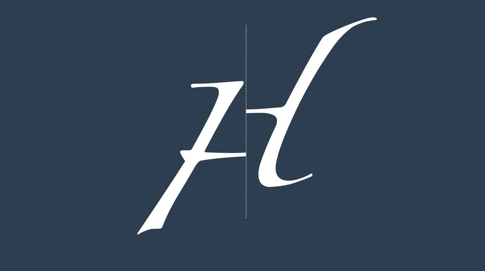

import numpy as np
from pydantic import AfterValidator, BaseModel
from typing_extensions import Annotated
def between_minus_180_and_180(lon: float) -> float:
if lon < -180 or lon > 180:
raise ValueError(f"Longitude {lon} must be between -180 and +180")
return lon
def between_minus_pi_and_pi(theta: float) -> float:
if theta < -np.pi or theta > np.pi:
raise ValueError(f"Longitude {theta} must be between -pi and +pi")
return theta
def between_minus_90_and_90(lat: float) -> float:
if lat < -90 or lat > 90:
raise ValueError(f"Latitude {lat} must be between -90 and +90")
return lat
def between_minus_half_pi_and_half_pi(phi: float) -> float:
if phi < -np.pi / 2 or phi > np.pi / 2:
raise ValueError(f"Latitude {phi} must be between -pi/1 and +pi/2")
return phi
def positive(alt: float) -> float:
if alt < 0:
raise ValueError(f"Altitude {alt} must be positive")
return alt
class PointDeg(BaseModel):
lon: Annotated[float, AfterValidator(between_minus_180_and_180)]
lat: Annotated[float, AfterValidator(between_minus_90_and_90)]
alt: Annotated[float, AfterValidator(positive)]
class Config:
frozen = True
class PointRad(BaseModel):
theta: Annotated[float, AfterValidator(between_minus_pi_and_pi)]
phi: Annotated[float, AfterValidator(between_minus_half_pi_and_half_pi)]
alt: Annotated[float, AfterValidator(positive)]
class Config:
frozen = True
class Point3D(BaseModel):
x: float
y: float
z: float
class Config:
frozen = True
def deg2rad(point: PointDeg) -> PointRad:
return PointRad(
theta=float(np.deg2rad(point.lon)),
phi=float(np.deg2rad(point.lat)),
alt=point.alt,
)
def rad2deg(point: PointRad) -> PointDeg:
return PointDeg(
lon=float(np.deg2rad(point.theta)),
lat=float(np.deg2rad(point.phi)),
alt=point.alt,
)
def immersion_from_rad(point: PointRad, earth_radius: float) -> Point3D:
return Point3D(
x=(earth_radius + point.alt) * np.cos(point.phi) * np.cos(point.theta),
y=(earth_radius + point.alt) * np.cos(point.phi) * np.sin(point.theta),
z=(earth_radius + point.alt) * np.sin(point.phi),
)
def immersion_from_deg(point: PointDeg) -> Point3D:
return immersion_from_rad(deg2rad(point))
Introduction
This blog post presents a numerical method to compute the Haversine distance between points at different altitude.
The problem is formalised in Section 1.1, then Section 1.2 offers a naive numerical method based on Pythagoras.
Finally in section Section 1.3 a more accurate method based on differential calculus is presented.
If you are passing around to get the code, please do jump directly to to Section 1.4, and if you are here for some amusement, or to test your understanding, you can look at the final exercises (with some solutions) in section sec-appendix Section 1.5
Note
This blog post was inspired by and created after this question on stack overflow (there was not enough space to fit it all in a single answer).
Thanks to sebb for raising it, and to all the thread’s contributors.
- Section 1.1 problem setting
- Section 1.2 naive solution with Pythagoras
- Section 1.3 more accurate solution based on integral calculus
- Section 1.5 hands-on exercises
Problem setting
Two points \(p_A\) and \(p_B\) on the surface of two concentric spheres can be described by the three coordinates: the usual latitude and longitude in degrees and the altitude in a chosen unit of measurement (Km in this case). When the angles are expressed in radians, we use the greek letters theta and phi, or \(\theta\) and \(\varphi\).
\[ \begin{align*} p_{A} & = \begin{cases} \theta_A \\ \varphi_A \\ h_A \\ \end{cases} \qquad p_{B} = \begin{cases} \theta_B \qquad \quad \text{longitude [rad]}\\ \varphi_B \qquad \quad \text{latitude [rad]} \\ h_B \qquad \quad \text{altitude [Km]} \\ \end{cases} \end{align*} \]
The altitude is not the radius of the spheres where the point lives, as it is relative to a zero-altitude sphere whose radius is the average earth radius \(\mathcal{R}\) (that is, the sea level).
Something not used in this post, but added here for completeness and for a clearer understanding of the zero-altitude radius: the immersion of a point \(p\) with altitude \(h\) from the sphere of radius \(\mathcal{R}\) to the 3D space whose origin is in the centre of the sphere and the north pole is on the z-axis, indicated with the greek letter iota, is given by:
\[ \iota_{\mathcal{R}}: \mathbb{S}^2 \rightarrow \mathbb{R}^3 \]
\[ \iota_{\mathcal{R}}(p) = \iota_{\mathcal{R}}(\theta, \varphi, h) = \begin{cases} x = (\mathcal{R} + h) \cos\varphi \cos\theta\\ y = (\mathcal{R} + h) \cos\varphi \sin\theta\\ z = (\mathcal{R} + h) \sin\varphi\\ \end{cases} \]
In the previous blog posts about the Haversine distance and bearing we have dealt with only 2 coordinates system and done without classes. Here for a change, and to avoid swapping latitude and longitude by mistake, points are encoded with python classes.
Finally, we add one more tool foundational to find the solution of the haversine distance for 2 points at different altitude: the Haversine distance for two points at the same altitude \(h\), or better, the haversine distance for a heart of radius \(\mathcal{R} + h\):
\[ \begin{align*} \text{Hav}_{h}(p_A, p_B) = 2 (\mathcal{R} + h) \arcsin \left( \left[ \text{hav}(\varphi_B - \varphi_A) + (1 - \text{hav}(\varphi_B - \varphi_A) - \text{hav}(\varphi_B + \varphi_A) ) \text{hav}(\theta_B - \theta_A) \right]^{1/2} \right) \end{align*} \] where \(\text{hav}\) is the Haversine function given by: \[ \text{hav}(\lambda) := \sin^2\left(\frac{\lambda}{2}\right) = \frac{1 - \cos(\lambda)}{2}~. \]
def _hav_aux(p1: PointRad, p2: PointRad) -> float:
hav_fun = lambda x: np.sin(x / 2) ** 2
return hav_fun(p2.phi - p1.phi) + (1 - hav_fun(p2.phi - p1.phi) - hav_fun(p2.phi + p1.phi)) * hav_fun(
p2.theta - p1.theta
)
def haversine_distance(p1: PointDeg, p2: PointDeg, radius: float) -> float:
return float(2 * radius * np.arcsin(np.sqrt(_hav_aux(deg2rad(p1), deg2rad(p2)))))We conclude the section with an observation that will prove to be very convenient later on: if we have the Haversine distance between two points at the same altitude \(h_1\) (or radius \(\mathcal{R} + h_1\)) and we want to know the distance between the same point at the same altitude \(h_2\) (or radius \(\mathcal{R} + h_2\)) there is no need to re-compute the haversine.
We can simply divide by the orignal radius \(\mathcal{R} + h_1\), and then multiply for the intended radius \(\mathcal{R} + h_2\).
In formula: \[ \begin{align*} \text{Hav}_{h_1} = \frac{\mathcal{R} + h_2}{\mathcal{R} + h_1} \text{Hav}_{h_2} \end{align*} \]
R_Km = 6371
# two input points
p_A = PointDeg(lon=0.0, lat=0.0, alt=0)
p_B = PointDeg(lon=5.0, lat=5.0, alt=200)
# generalize to any altitude
R_min = np.min([p_A.alt, p_B.alt]) + R_Km
R_max = np.max([p_A.alt, p_B.alt]) + R_Km
print(f"radius lowest point: {R_min} (Km)")
print(f"radius highest point: {R_max} (Km)")
assert np.abs(haversine_distance(p_A, p_B, R_max) - (R_max / R_min) * haversine_distance(p_A, p_B, R_min)) < 10e-12
assert np.abs(haversine_distance(p_A, p_B, R_min) - (R_min / R_max) * haversine_distance(p_A, p_B, R_max)) < 10e-12radius lowest point: 6371.0 (Km)
radius highest point: 6571.0 (Km)First approximation with Pythagoras
The most direct way to compute the Haversine distance between two points at different altitude \(\text{Havh}\) is to apply Pythagora to the two cathets given by the haversine distance at the lowest altitude of the two points (say \(h_A\)) and to the difference in altitudes:
\[ \begin{align*} \text{Havh} (p_A, p_B) = \sqrt{\text{Hav}_{h_A} (p_A, p_B)^2 + (h_B - h_A)^2 } \end{align*} \]
Now, for the case of \(h_A < h_B\) we can geometrically expect \(\sqrt{\text{Hav}_{h_A} (p_A, p_B)^2 + (h_B - h_A)^2 }\) to be smaller than \(\sqrt{\text{Hav}_{h_B} (p_A, p_B)^2 + (h_B - h_A)^2 }\). We can also expect the first hypotenuse to be a lower bound for the correct solution and the second hypotenuse to be an upper bound.
FIGURE HERE
So, a more accurate, although still naive answer can be their average:
\[ \begin{align*} \text{Havh} (p_A, p_B) = 0.5 \sqrt{\text{Hav}_{h_A} (p_A, p_B)^2 + (h_B - h_A)^2 } + 0.5 \sqrt{\text{Hav}_{h_B} (p_A, p_B)^2 + (h_B - h_A)^2 } \end{align*} \]
def haversine_distance_h_naive(p1: PointDeg, p2: PointDeg, earth_radius: float) -> float:
r_min = np.min([p1.alt, p2.alt]) + earth_radius
r_max = np.max([p1.alt, p2.alt]) + earth_radius
return (
np.sqrt(haversine_distance(p1, p2, r_min) ** 2 + (p1.alt - p2.alt) ** 2)
+ np.sqrt(haversine_distance(p_A, p_B, r_max) ** 2 + (p1.alt - p2.alt) ** 2)
) / 2
print(f"Distance with naive Pythagoras {haversine_distance_h_naive(p_A, p_B, R_Km)} Km")Distance with naive Pythagoras 822.7841448241761 KmSolution using calculus
Now, why the naive solution is not a great approximation? As it may be clear from the previous image, when increasing the altitude also the distance between points increases too, and that increase is not taken into account when using the distance at the lowest altitude for horizontal cathet. In the same way, when decreasing the altitude, the distance between points decreases, and this increase is not taken into account when using the distance at the highest altitude for horizontal cathet.
If \(x\) is the point on the
Code
or, if you prefer to avoid classes (in markdown):
def hav_aux(theta_A: float, phi_A: float, theta_B: float, phi_B: float) -> float:
hav_fun = lambda x: np.sin(x / 2) ** 2
return hav_fun(phi_B - phi_A) + (1 - hav_fun(phi_B - phi_A) - hav_fun(phi_B + phi_A)) * hav_fun(theta_B - theta_A)
def haversine_distance(p1_lon: float, p1_lat: float, p2_lon: float, p2_lat: float, R_Km: float) -> float:
theta_1, phi_1, theta_2, phi_2 = map(np.radians, [p1_lon, p1_lat, p2_lon, p2_lat])
return float(2 * R_Km * np.arcsin(np.sqrt(hav_aux(theta_1, phi_1, theta_2, phi_2))))Validation
Hands-on
final exercise for the python-minded (and with no solution): turn functions into class methods.
# do some testing
# try:
# PointDeg(lonlat=-)
# except ValidationError as err:
# print(err)
# """
# 1 validation error for Model
# number
# Value error, 1 is not an even number [type=value_error, input_value=1, input_type=int]
# """# https://stackoverflow.com/questions/33111529/calculating-distance-between-two-points-using-latitude-longitude-and-altitude-e#:~:text=You%20can%20calculate%20distance%20between,change%20in%20elevation%20in%20meters.
# as soon as written post it over this blog post.R_Km = 6371
# given two points
p_A = PointDeg(lon=0.0, lat=0.0, alt=0)
p_B = PointDeg(lon=5.0, lat=5.0, alt=200)haversine_distance(p_A, p_B, R_Km)785.7672208422621haversine_distance(p_A, p_B, R_Km)R_min = np.min([p_A.alt, p_B.alt]) + R_Km
R_max = np.max([p_A.alt, p_B.alt]) + R_Km
print(f"radius lowest point: {R_min} (Km)")
print(f"radius highest point: {R_max} (Km)")radius lowest point: 6371.0 (Km)
radius highest point: 6571.0 (Km)assert haversine_distance(p_A, p_B, R_max) == float(haversine_distance(p_A, p_B, R_min) * (R_min + H) / R_min)# with Pitagora
H = np.abs(p_A.alt - p_B.alt)
D = haversine_distance(p_A, p_B, R_min)
D_max = haversine_distance(p_A, p_B, R_max)
print(f"distance in altitude: {H} (Km)")
print(f"haversine dist at lowest altitude: {D} (Km)")
print(f"haversine dist at highest altitude: {D_max} (Km)")distance in altitude: 200.0 (Km)
haversine dist at lowest altitude: 785.7672208422621 (Km)
haversine dist at highest altitude: 810.4342188282067 (Km)# what is the difference between dist and the dist computed on the full batch and with no iterative process
dist_pitagora_direct_min = float(np.sqrt(haversine_distance(p_A, p_B, R_min) ** 2 + H**2))
dist_pitagora_direct_min810.820649311654# if the direct was working OK then direct_min and direct_max should be the same. But it is not!
dist_pitagora_direct_max = float(np.sqrt(haversine_distance(p_A, p_B, R_max) ** 2 + H**2))
dist_pitagora_direct_max834.7476403366982# an approximation is the average of the direct
dist_pitagora = (dist_pitagora_direct_max + dist_pitagora_direct_min) / 2
dist_pitagora822.7841448241761haversine_distance_h_naive(p_A, p_B, R_Km)np.float64(822.7841448241761)# approximating method
N = 300
d = D / N
h = H / N
print()
print(f"step distance in altitude: {round(h,4)} (Km)")
print(f"step distance haversine: {round(d,4)} (Km)")
dist = float(np.sum([np.sqrt((d * ((R_min + i * h) / R_min)) ** 2 + h**2) for i in range(0, N)]))
distdist_better = float(
np.sum(
[
(
np.sqrt((d * ((R_min + i * h) / R_min)) ** 2 + h**2)
+ np.sqrt((d * ((R_min + (i + 1) * h) / R_min)) ** 2 + h**2)
)
/ 2
for i in range(0, N)
]
)
)
dist_better# all in one function
def haversine_distance_with_altitude(
p1: PointDeg,
p2: PointDeg,
earth_radius: float = 6371.0,
iterations: int = 300,
) -> float:
R_min = np.min([p1.alt, p2.alt]) + earth_radius
d = haversine_distance(p1, p2, R_min) / iterations
h = np.abs(p1.alt - p2.alt) / iterations
return float(np.sum([np.sqrt((d * ((R_min + i * h) / R_min)) ** 2 + h**2) for i in range(0, iterations)]))
haversine_distance_with_altitude(p_A, p_B, iterations=300)# test with point in the same location different altitude, same altitude different location.
# check that is close enough to the method with pitagora
# Leave as an exercise: can you apply the pitagora idea to improve the haversine distance with altitude?
# solution:
def haversine_distance_with_altitude_better(
p1: PointDeg,
p2: PointDeg,
earth_radius: float = 6371.0,
iterations: int = 300,
) -> float:
R_min = np.min([p1.alt, p2.alt]) + earth_radius
d = haversine_distance(p1, p2, R_min) / iterations
h = np.abs(p1.alt - p2.alt) / iterations
return float(
np.sum(
[
(
np.sqrt((d * ((R_min + i * h) / R_min)) ** 2 + h**2)
+ np.sqrt((d * ((R_min + (i + 1) * h) / R_min)) ** 2 + h**2)
)
/ 2
for i in range(0, iterations)
]
)
)
# pitagora is based on the average, can you find a parameter to weight the average so that the average would be more accurate
# solution: TODO compute w with some examples
def haversine_distance_with_altitude_even_better(
p1: PointDeg,
p2: PointDeg,
earth_radius: float = 6371.0,
iterations: int = 300,
) -> float:
w = 0.6
R_min = np.min([p1.alt, p2.alt]) + earth_radius
d = haversine_distance(p1, p2, R_min) / iterations
h = np.abs(p1.alt - p2.alt) / iterations
return float(
np.sum(
[
(
(1 - w) * np.sqrt((d * ((R_min + i * h) / R_min)) ** 2 + h**2)
+ w * np.sqrt((d * ((R_min + (i + 1) * h) / R_min)) ** 2 + h**2)
)
for i in range(0, iterations)
]
)
)
# Is the haversine distance between two points at different altitude the shortest distance between the two points? Do you need to dig a tunnel?haversine_distance_with_altitude_even_better(p_A, p_B, iterations=300)haversine_distance_with_altitude_better(p_A, p_B, iterations=300)